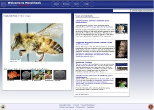

Morphbank / Imaging
Morphbank - Storage & management of science imagery
Overview
The Atlas is excited to partner with the USA based developer of Morphbank during 2010 and 2011 to enhance and tailor the Morphbank system to meet the needs of Atlas users and Australian collections institutions. These changes will also benefit all Morphbank users around the world.

Morphbank is an open source, non-commercial image management system for collections of biological scientific images. Based at the Florida State University in Tallahassee USA, it was developed in 1998 by a Swedish-Spanish-American consortium of entomologists and receives its main funding from the Biological Databases and Informatics program of the USA National Science Foundation.
Morphbank was originally designed for the research community to share scientific images on a “fair use” basis using open source software and Creative Commons licensing, which generally means that users can freely download and use public images for non-commercial purposes with the appropriate attribution. It is currently used by an increasing number of scientists, researchers & educators (currently about 500) for a wide variety of specimen-based research, including comparative anatomy, morphological phylogenetics, taxonomy & related fields focused on increasing our knowledge about biodiversity. The system can also be used to present images as a “virtual collection” and also to sort and group images according to certain morphological characteristics.
Example of the image summary page in Morphbank v3.
Morphbank assists scientific research by making it possible to store, discuss and share detailed images of specimens from all over the world. Currently, Morphbank holds about 275,000 images representing more than 4,500 different species from around the world, more than 216,000 of which have been released for public access. Many more images are in the system that are presently not public, but are held private until the contributing scientists are ready to release them. Morphbank also has a strong linkage to authoritative taxonomy, and an established peer-to-peer data synchronisation functionality to make data held on different international servers discoverable from other Morphbank sites. There are currently only about 1,100 images of Australian species in Morphbank and the Atlas is actively working with collection institutions to store many more images of Australian species in this repository.
ALA’s instance of Morphbank (http://morphbank.ala.org.au) will be able to store images and related data relevant to Australia, providing a free facility for image collection owners to store, manage and share their images.
Images added to ALA’s Morphbank will be accessible via the Atlas and, where specimens represented by images in Morphbank have location information, they will contribute to the larger pool of specimen-based observational data that is available for scientific analysis.
Biologists who use Morphbank can mark-up an image and make comments about images that are seen by other researchers, potentially in other parts of the world. Morphbank also provides stable Web links to image collections for use in online and traditional print publications. Large biological inventory projects can use Morphbank to share image information about morphological types and allow experts to do remote identification. Users can create character states and use collection slide-sorting functionality to illustrate characters or as a tool to effectively use images for character discovery.
The images can range from small-scale – electron microscopy, line drawings to characterise the morphology of individual species, through to the large-scale – images of specimens, and photos of specimens in their natural environment.
Morphbank wraps curatorial controls around the management of image collections. Images lodged in Morphbank contain data that describes the image and its provenance, and provides the curatorial information associated with specimens. Images are linked to the appropriate place in the taxonomic hierarchy and can be linked to external resources such as web pages or database records.
Project TimeLine
The ALA-Morphbank project will be implemented over a number of phases. The first two of these should be completed by October 2010 and involve implementing test and production instances of the existing Morphbank (version 3) system on Australian infrastructure and beginning to load Australian data.
Subsequent phases (approx. 3 months each) will be implemented over the next 12 months to September 2011, culminating in the public release of version 4 of the application. Each phase will enhance the functionality of the existing version of the system and version 4 will implement a new and greatly improved user interface.
Project Team
Peter Brenton (ALA Project Lead/Analyst)
Martin Ollman (ALA Design and UI developer)
Dr. Greg Riccardi (Morphbank Project Lead/Developer, USA)
Robert Bruhn (Morphbank Development team, USA)
Debbie Paul (Morphbank Development team, USA)
Contribute Your Images
The Atlas is encouraging holders of Australian image collections, whether in museums, herbaria, educational institutions, agricultural and conservation departments, naturalist groups or keen community scientists to consider adding their collections to Australia’s node of Morphbank, and is keen to work with collection managers to this end.
Contact atlasoflivingaustralia@csiro.au if you are interested in storing your image collection in Morphbank-ALA.
Related Links
Morphbank Australia site: http://morphbank.ala.org.au
Morphbank USA (parent site): http://www.morphbank.net